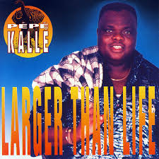
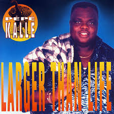
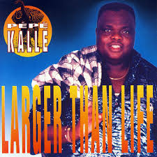
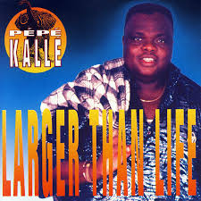
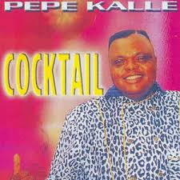
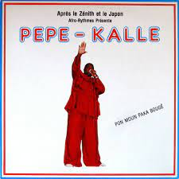
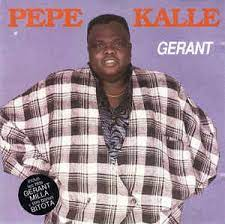

Music By Pepe Kalle
 



Roger Milla
Zouke Zouke
Gérant
Nina
Gérant - album 1992
Moyibi - album 1988
Cocktail - album 1998
Empire Bakuba - album 1986
Pépé Kallés musik karriere startede med l'African Jazz, bandet til Le Grand Kallé . Senere i Bella Bella og blev forsanger for Lipua Lipua. I 1972 forlod Kallé sammen med Dilu Dilumona og Papy Tex Lipua Lipua for at danne deres eget band ved navn Empire Bakuba.
Empire Bakuba tog sit navn fra en congolesisk krigerstamme. Bandet var et hit, og sammen med Zaiko Langa Langa blev de til det mest populære ungdomsband. Med hits som Pépé Kallé's Dadou og Papy Tex's Sango ya mawa var bandet et fast på hitlisterne. De skabte også en ny dans, som hed kwassa kwassa.
 Pépé Kallé udgav fire albums om året. I midten af firserne var de meget populære i det hele frankofoniske Central- og Vestafrika. Hans samarbejde med Nyboma fra 1986 med navnet Zouke zouke var et af de mest solgte album i årene.
Hans album fra 1990, Roger milla - en hyldest til den store camerounske fodboldspiller, er et eksempel på dette arrangement . Pépé Kallés popularitet blev ved med at stige i halvfemserne, da han udgav albums som Gigantafrique , Larger than life og Cocktail. Han samarbejdede også med andre legender som Lutumba Simaro og Nyoka Longo.
Den 28. november 1998 fik Pépé Kallé (Kabasele Yampanya) et hjerteanfald i sit hjem i Kinshasa og blev hastet til hospitalet, han blev kun 46 år. Kort efter midnat søndag den 29. november blev Pépé Kallé erklæret død. Pépé Kallé blev begravet den 6. december på Gombe kirkegård i en storladet statsbegravelse. Han var en del af de congolesiske musikstjerner, der døde alt for ung. Han efterlod sine fem børn, og hans kone som døde for nylig i 2019. Folk beskrev ham som en meget talentfuld musiker og bandleder. Andre beskrev ham som en der elskede sit land, selvom tiderne var hårde. "På trods af dystre forhold i Zaïre/Congo i løbet af Mobutus sidste år og under Laurent Kabilas vaklende regime, Pépé Kallé blev ved med at opholde sig i Kinshasa og nægtede at deltage i massebevægelsen af musikstjerner til Europa. Han var den eneste musiker, der aldrig havde problemer med nogen. Han var i stand til at forene to musikalske generationer, «sagde Tabu Ley. Journalist Achille Ngoie, der dækkede Empire Bakuba fra dets begyndelse, huskede Kallé som en mand af folket. "Kallé kunne stå på scenen midt i en sang, og da han så en person i publikum, han ikke havde set i årevis, kunne han hilse den person ind i sangen." Han var en ekstraordinær person med en elefantisk hukommelse.